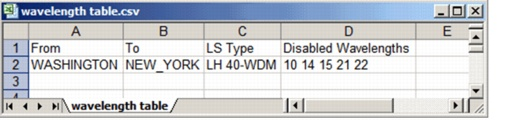

Importing and Exporting Data > Data File Formats > Wavelengths Tables Data Files
Wavelengths Tables Data Files
You can use wavelengths tables data files to disable certain wavelengths of a specific line system type on a link, as described in Wavelength Filtering. Wavelengths tables data files use the format shown in Figure 5-14. The first row contains four headers; each subsequent row specifies a wavelength filter for a combination of a link and a line system type.
Figure 5-14 Wavelengths Tables Data File

| Home © 1987-2007 OPNET Technologies, Inc. All Rights Reserved. This software may be covered by one or more U.S. Patents. See complete patent notice in the Legal Notices section. OPNET Support Center |